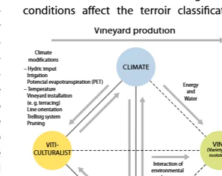
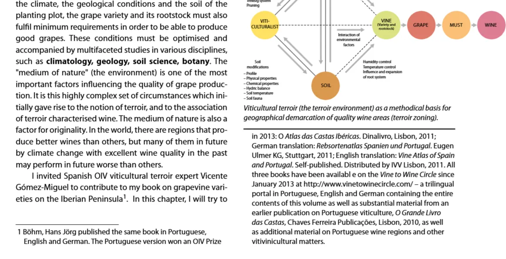

Chapter 2 · Terroir
Viticultural Terroir Zoning
Wine connoisseurs lend considerable weight to the term terroir. However, the complexity of the various edaphoclimatic factors shifts the relevance of a concrete statement about the sensory characteristics of a particular wine and how they relate to the terroir into the realm of conjecture. Although there are clear correlations between certain climatic characteristics of a soil parcel or even an entire vineyard site or region and the profile of wines of different grape varieties harvested there, their concrete determination in view of the diversity of genetic factors influencing the grape varieties and processing strategies does not make it easy to recognise fixed general rules here. Although it is possible to make statements regarding the acidity or maturity of the future wine, it is more difficult to do so when it comes to assigning the aromatic sensory stimuli of the wine of a specific variety to climate or soil characteristics.
The consciousness about the interaction between grape varieties and their geographical genetic origin has existed since ancient times. From this, the idea of the phenotypical affiliation of vine and wine to their adequate terroir developed with t he legal regulation of the D.O. (Denomination of Origin). Viticulture in general, but especially the production of quality wine, is bound to various factors, determining and limiting characteristics of the environment are necessary to be able to practice viticulture. In addition to explain the determining factors Gómez-Miguel discusses. The dominant climatic factors are also mentioned in the chapter on wine-growing regions.


Vicente Gómez-Miguel considered the basic concept of vitivinicultural terroir in the light of the OIV definition of the term adopted by OIV Resolution OIV/VITI 333/2010:
Vitivinicultural ‘terroir’ is a concept which refers to an area
in which collective knowledge of the interactions between
the identifiable physical and biological environment and
applied vitivinicultural practices develops, providing dis-
tinctive characteristics for the products originating from
this area. ‘Terroir’ includes specific soil, topography, cli-
mate, landscape characteristics and biodiversity features.
The following sections outline the Gómez-Miguel’s methodical basis for the demarcation of quality wine areas, or terroir zoning, and examine the most important factors influencing viticultural terroir.